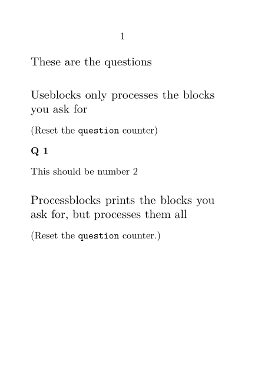

Contents
Summary
The command \processblocks is used to process blocks
Settings
Description
Print only the
block
s with
tag
, but process them all. This is important when
enumerations
are in play, because items that are not processed don't increment the counter. If no tags are specified, all the
block
s are printed.
Examples
Example 1
-
\setuppapersize[A7] \starttext \defineblock[question] \defineenumeration[Q][text=Q] \subject{These are the questions} \beginquestion[first] \Q This should be number 1 \endquestion \beginquestion[last] \Q This should be number 2 \endquestion \subject{Useblocks only processes the blocks you ask for} (Reset the \type{question} counter) \resetQ \useblocks[question][last] \subject{Processblocks prints the blocks you ask for, but processes them all} (Reset the \type{question} counter.) \resetQ \processblocks[question][last] \stoptext
gives
- 
Notes
See also
- strc-blk.mkiv
- \defineblock to define a new kind of block.
- \setupblock to set up block style.
- \keepblocks to start displaying blocks where they are defined.
- \hideblocks to stop displaying blocks where they are defined.
- \useblocks to display blocks.
- \selectblocks to display only blocks mentioned in the current section.
- \forceblocks
- \nomoreblocks